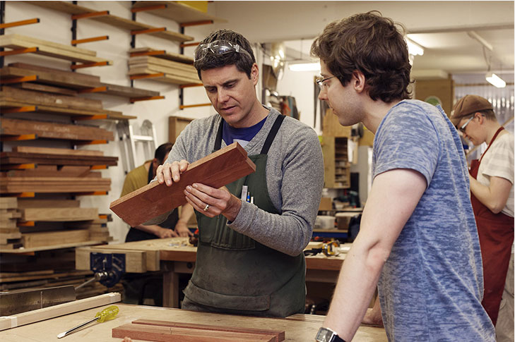

Piece Furniture conducts wood work classes in fine furniture making for the general public. The skills required to work to a high standard with timber take time and patience to acquire. The aim of the wood working classes are to teach enthusiastic individuals the skills to make fine furniture.
The classes are restricted to four people per class. The small class numbers enable John give extensive one on one time in a reltttaxed atmosphere where you can learn at your own pace. Wood work classes are often a mix of beginners as well as more experienced woodworkers.
Beginner classes
An absolute beginner should expect to start their journey learning hand skills. They are the foundation to making a craftsman.You will make two set projects that will include extensive hand planing and chisel work.
Then you will progress to make one or two small simple boxes. This project is an introduction to the world of machinery.Thorough training on the correct and safe usage being an important part of the process.
The final set project is a small table designed by John. This table teaches a wide range of common furniture making techniques and processes.It would typically take about 3 to 4 terms in total to complete all four of the set projects.
After the training period is complete you are free to work on agreed projects of your choice to further your skills, all with the help and guidance from John.
Experienced students
More experienced students may commence at a level appropriate to them after meeting with John.
